Colin shares 25 spares with the Thursday pod. Wanted first puts the three on your wishlist ahead, then the four a deck of yours needs. Every frame is the shipped friend page with the Collection's frame added.
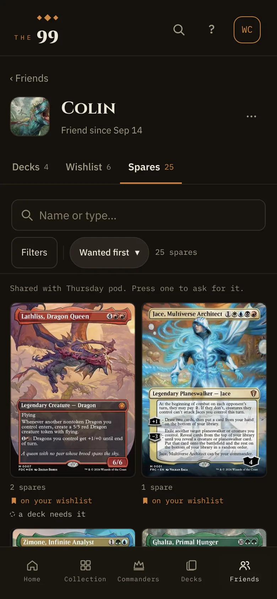
P1 · At rest
Compact head: search, then Filters · Sort: Wanted first · 25 spares. The line keeps the pods and Press one to ask for it.
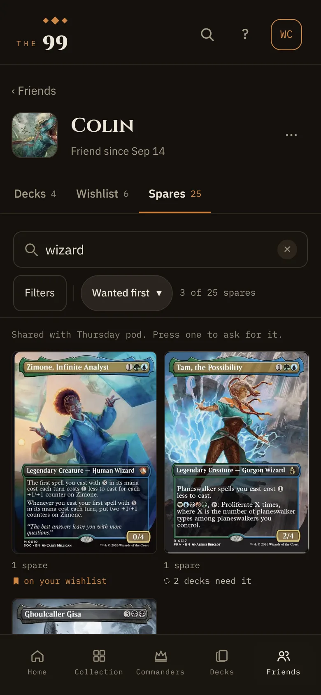
P2 · Search by type
“wizard” is in no name; the type line holds it. 3 of 25 spares.
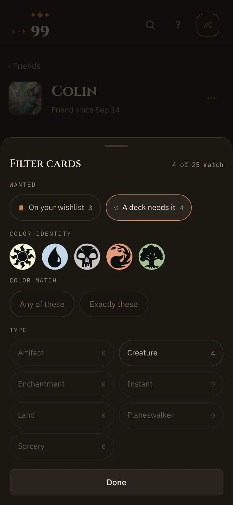
P3 · Filters sheet
Wanted leads, then Color identity and Type. A deck needs it is on: 4 of 25 match.
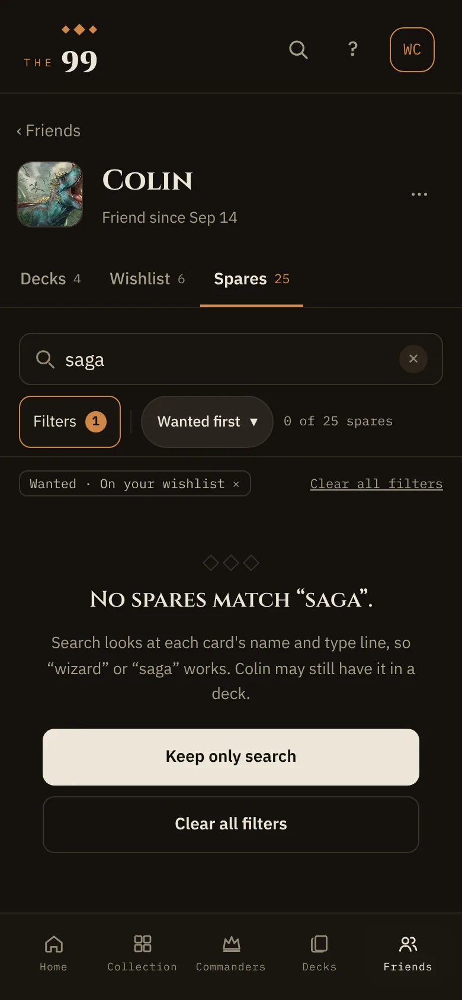
P4 · No results
“saga” with On your wishlist. The chip shelf shows what is on; Keep only search leads.
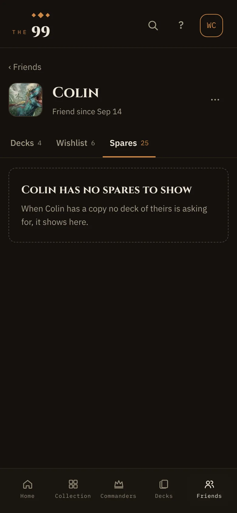
P5 · Empty
Shipped: Colin has no spares to show. No frame, nothing to filter.
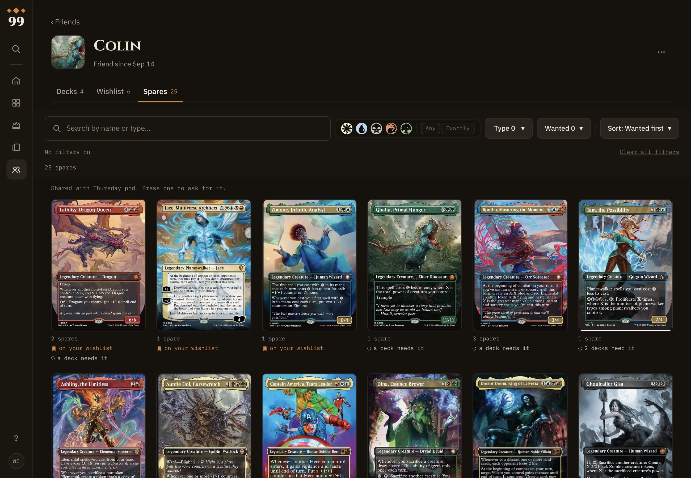
D1 · At rest
The wide chassis: search, pips, Type ▾, Wanted ▾, then Sort past the hairline. No filters on.
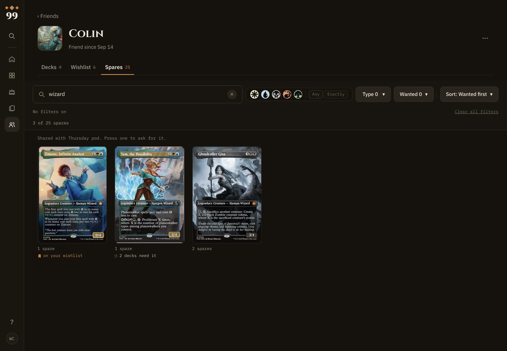
D2 · Search by type
3 of 25 spares. Gisa, Tam and Zimone are wizards by type line.
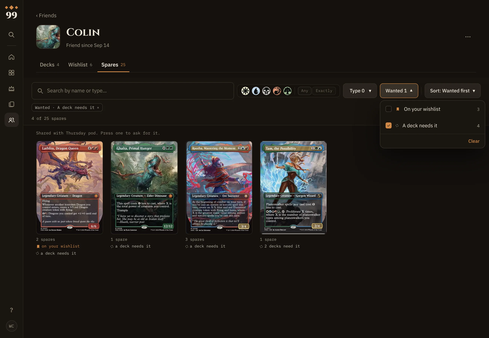
D3 · Wanted ▾
The Availability panel's shape: bookmark and the deck page's hollow dot lead the two rows, with counts.
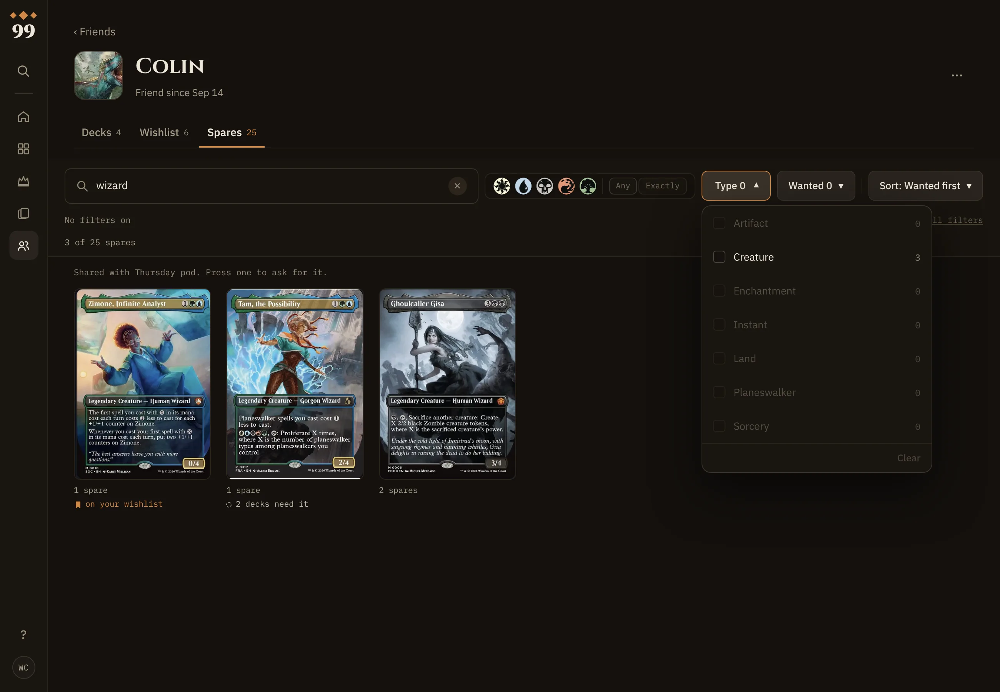
D4 · Type ▾
Counts follow the other filters: with “wizard”, Creature reads 3; the empty types dim.
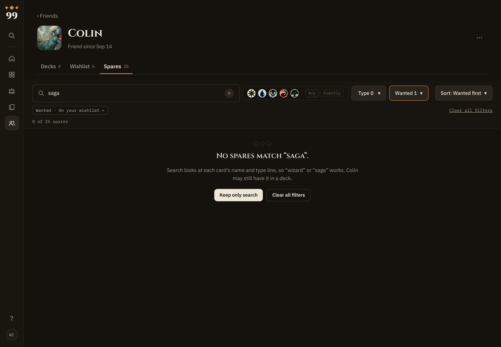
D5 · No results
The shared ZeroState in this tab's words.
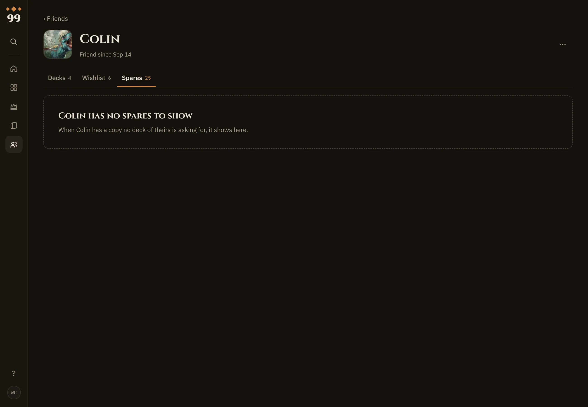
D6 · Empty
Shipped, unchanged.